Węglowce
Węglowce –pierwiastki 14 grupy przejawiają zjawisko alotropii – występowania tego samego pierwiastka w postaci różnych struktur o różnej budowie, a tym samym właściwościach fizycznych i chemicznych. Najbardziej znanym przykładem jest węgiel, który występuje jako grafit i diament.
Grafit to struktura węgla, w której atomy węgla występują w plastrach ułożonych na sobie. Plaster taki zbudowany jest atomów węgla o hybrydyzacji \(sp^{2}\) w pierścieniach sześcioczłonowych, pierścienie te są sprzężone i nieskończone w obu wymiarach:
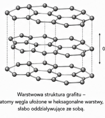
Jest kruchy, dlatego, iż węgle w płaszczyznach są połączone mocnymi wiązaniami kowalencyjnym, ale płaszczyzny między sobą są połączone słabo – nie występują między nimi wiązania kowalencyjne.
Grafit przewodzi prąd elektryczny, przez sprzężony układ elektronów pi. Przewodnictwo to polega na tym, iż w przypadku tzw. sprzężonego układu, gdzie jest wiązanie podwójne, potem pojedyncze, potem znowu podwójne itd. przeskok jednego wiązania podwójnego na miejsce pojedynczego powoduje całą kaskadę przeskoków rozciągnięty na całą płaszczyznę. Powoduje to anizotropowość przewodnictwa tzn. grafit dobrze przewodzi w kierunkach posiadania płaszczyzn.
W warunkach normalnych grafit jest najstabilniejszą (najbardziej korzystną energetycznie ) odmianą węgla.
Kolejną formą alotropową węgla jest grafen – są to oddzielne warstwy grafitowe. Został odkryty przez przypadek, przez naklejanie na grafit tasmy klejącej i jej zdzieranie.
Diament
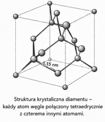
Hybrydyzacja atom wegla – \(sp^{3}\)
W strukturze diamentu wszystkie atomy połączone są jednokrotnymi silnymi wiązaniami kowalencyjnymi – co powoduje, że struktura jest klasycznym kryształem kowalencyjnym = mało krucha, twarda, wytrzymała. Nie przewodzi prądu elektrycznego, nie sposób stopić – stopienie wymagałoby rozerwania wiązania kowalencyjnego, a więc zniszczenie struktury. Diament jest stabilny termodynamicznie, najbardziej korzystny przy bardzo wysokim ciśnieniu.
Istnieje też podobna struktura o innej nazwie.
Lonsdaleit
Heksagonalna odmiana diamentu – struktura krystaliczna podobna do diamentu, ale o układzie heksagonalnym
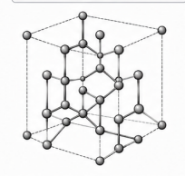
Fullereny:
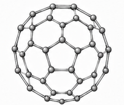
Fullereny są cząsteczkami zbudowanymi tylko z atomów węgla mającymi kształt piłki do gry. Zbudowane one są z pierścieni 5 i 6 członowych, analogicznie do piłki nożnej, wszystkie atomy węgla maja hybrydyzację \(sp^{2}\). Tworzą one kryształ molekularny, bo w przeciwieństwie do diamentu i grafitu jesteśmy w stanie narysować całą cząsteczkę, rozpuszczalne są w rozpuszczalnikach organicznych, słabo przewodzą prąd elektryczny.
Jako związki podobne to fulerenów możemy rozpatrywać nanorurki.
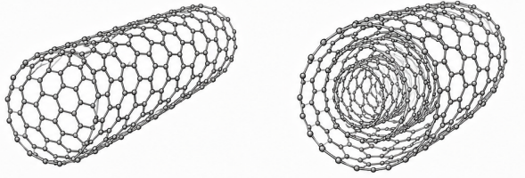
Cyklo[18]karbon\(C_{18}\)
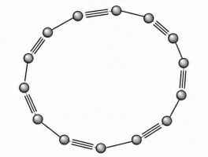
Grupa naukowców ostatnio otrzymała pierścień zbudowany z osiemnastu węgli – cyklo[18]karbon. Węgle mają w tym związku hybrydyzację \(sp\), kryształ molekularny, rozpuszczalny w rozpuszczalnikach organicznych, otrzymywany syntetycznie
Tlenki węgla.
\(CO_{2}\) – dwutlenek węgla, produkt spalania całkowitego węgla oraz związków organicznych.
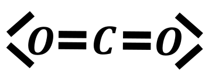
Uzyskuje się go również przez zakwaszanie węglanów mocniejszymi kwasami
\[CaCO_{3} + 2HCl \rightarrow H_{2}O + CO_{2}\left( nie\ H_{2}CO_{3} \right) + CaCl_{2}\]
W warunkach normalnych jest on gazem o temperaturze resublimacji -78°C, zestalony dwutlenek węgla nazywa się suchym lodem, hybrydyzacja \(C\ sp\ ;O\ sp^{2}\). Tlenek ten wykazuje właściwości kwasowe, reaguje z wodą dając kwas i z roztworami zasad dając sole
\[CO_{2} + H_{2}O \rightleftarrows H_{2}CO_{3}\]
Ten proces zachodzi np. w wodzie gazowanej i jak dobrze wiemy jest on odwracalny.
\[CO_{2} + 2NaOH \rightarrow Na_{2}CO_{3} + H_{2}O\]
Jest jednym z gazów cieplarnianych. Bierze on również udział w procesie fotosyntezy
\[6H_{2}O + 6CO_{2} \rightarrow C_{6}H_{12}O_{6}\]
Wykrywanie \(\mathbf{C}\mathbf{O}_{\mathbf{2}}\) wodą wapienną
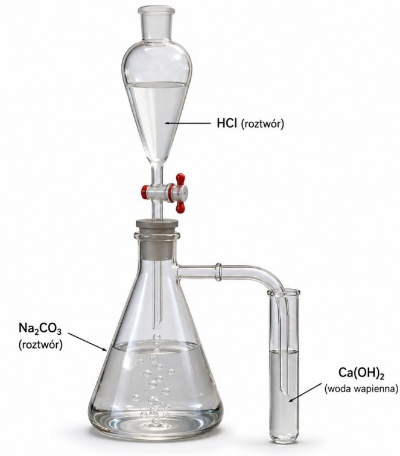
Woda wapienna to nasycony roztwór wodorotlenku wapnia, \(Ca(OH)_{2}^{aq}\). Przepuszczając przez ten roztwór tlenek węgla następuje reakcja wytrącenia nierozpuszczalnego węglanu wapnia\(CaCO_{3}\)
\[Ca(OH)_{2} + CO_{2} \rightarrow CaCO_{3} \downarrow + H_{2}O\]
Lub jonowo
\[Ca^{2 +} + 2OH^{-} + CO_{2} \rightarrow CaCO_{3} \downarrow + H_{2}O\]
Dodatkowo należy zwrócić uwagę, iż przepuszczanie dodatkowej porcji \(CO_{2}\) przez otrzymaną zawiesinę węglanu wapnia może spowodować jego rozpuszczenie, przez przekształcenie w wodorowęglan:
\[CaCO_{3} + H_{2}O + CO_{2} \rightarrow Ca\left( HCO_{3} \right)_{2}\]
\[CaCO_{3} + H_{2}O + CO_{2} \rightarrow Ca^{2 +} + 2HCO_{3}^{-}\]
Tlenek węgla (IV) nie reaguje z kwasami oraz nie podtrzymuje palenia. Zbieramy go jak gaz reagujący z wodą, cięższy od powietrza czyli probówką trzymaną normalnie, denkiem w dół
Drugim popularnym tlenkiem węgla jest tlenek węgla (II), \(CO\). Struktura elektronowa tego związku jest dość nietypowa i wymaga nauczenia się jej na pamięć. Występuje w niej jedno wiązanie koordynacyjne, które jest dodatkowym wiązaniem obok wiązań koordynacyjnych:
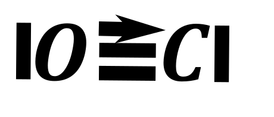
Oba atomy tworzące ten związek mają hybrydyzacje \(sp;\ \)
Gaz ten powstaje w wyniku reakcji półcałkowitego spalania węgla albo związków organicznych:
\[C + \frac{1}{2}O_{2} \rightarrow CO\]
\[CH_{4} + \frac{3}{2}O_{2} \rightarrow CO + 2H_{2}O\]
W laboratorium uzyskujemy go przez rozkład \(HCOOH\), kwasu mrówkowego, pod wpływem silnych kwasów np. \(H_{2}SO_{4}\)
\[HCOOH -^{H_{2}SO_{4}} \rightarrow H_{2}O + CO\]
Jest on silnie trujący, a że powstaje na skutek reakcji półspalania paliw organicznych oraz ma gęstość podobna do gęstości powietrza (\(M_{CO} = 28;M_{powietrza} = 28.8\)) jest względnie częstym powodem zatruć ze skutkiem śmiertelnym. Zatrucie tlenkiem węgla (II) CO polega na związaniu się tego związku hemoglobiną – i tym samym zablokowaniu przenoszenia tlenu przez hemoglobinę. Jedną z możliwości odtrucia jest podanie czystego tlenu.
Gaz ten w obecności tlenu ulega spalaniu
\[CO + \frac{1}{2}O_{2} \rightarrow CO_{2}\]
CO jest tlenkiem obojętny, nie reaguje ani z kwasem ani zasadą ani też wodą w normalnych warunkach. Natomiast pod wysokim ciśnieniem możliwa jest reakcji z silnymi zasadami takimi jak NaOH z utworzeniem mrówczanów
\[NaOH + CO \rightarrow HCOONa\]
Tlenek węgla (II) zbieramy pod wodą, z uwagi na obojętny charakter tego związku i gęstość zbliżoną do gęstości powietrza. Zestaw do laboratyrjnego otrzymywania wgląda następująco:
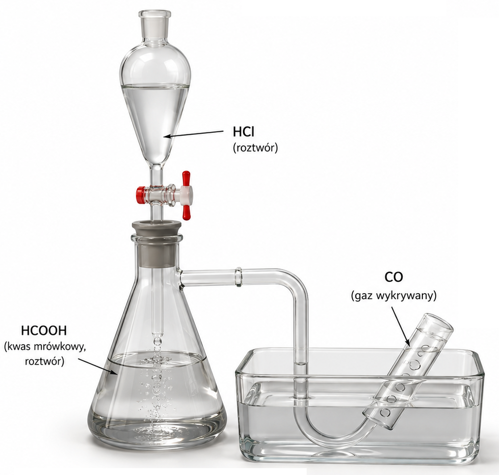
Przypominam, iż taki układ możemy stosować do zbierania wszelkich gazów, które nie reagują z wodą, bez względu na gęstość gazu.
\(CO\ \)reaguje z \(Cl_{2}\ \)dając fosgen \(COCl_{2}\) :
\[CO + Cl_{2} \rightarrow COCl_{2}\]
Fosgen, związek o zapachu skoszonej trawy, jest jednym z tzw. Chlorków kwasów nieorganicznych. Reaguje on z wodą dając \(HCl\) i \(CO_{2}\)
\[COCl_{2} + H_{2}O \rightarrow CO_{2} + 2HCl\]
Oraz z zasadami z utworzeniem soli kwasów nieorganicznych – węglanów i chlorków:
\[COCl_{2} + 4NaOH \rightarrow Na_{2}CO_{3} + 2NaCl + H_{2}O\]
Lub jonowo:
\[COCl_{2} + 4OH^{-} \rightarrow CO_{3}^{2 -} + 2Cl^{-} + H_{2}O\]
Istnieją inne tlenki węgla, które mogą wystąpić z informacją wstępną, na maturze ostatnio wystąpił \(C_{3}O_{2}\)
Węgiel tworzy jeden kwas uznawany za nieorganiczny, kwas węglowy (IV):\(H_{2}CO_{3}\). Jak dobrze wiemy on jest słabym kwasem nietrwałym, dobrze rozpuszczalnym w wodzie
\[H_{2}CO_{3} \rightarrow H_{2}O + CO_{2}\]
Wartości jego stałej dysocjacji znajdują się w tablicach. Kwas ten jest tak nietrwały, że rozpada się praktycznie natychmiast po utworzeniu, więc jego zapis jako produktu jest błędem, zawsze zamiast niego zawsze należy zapisać \(CO_{2} + H_{2}O\)
\[CaCO_{3} + 2HCl \rightarrow CaCl_{2} + H_{2}O + CO_{2}\]
\[CaCO_{3} + 2H^{+} \rightarrow Ca^{2 +} + H_{2}O + CO_{2}\]
Węglany metali I grupy i amonu są dobrze rozpuszczalne, natomiast II i dalszych raczej nie za bardzo, polecam tablice rozpuszczalności. Kwas ten też może tworzyć wodorosole – związki zawierające anion \(HCO_{3}^{-}\), wszystkie związki zawierające ten anion są dobrze rozpuszczalne.
\[CaCO_{3} + HCl \rightarrow Ca\left( HCO_{3} \right)Cl\]
\[CaCO_{3} + H^{+} \rightarrow Ca^{2 +} + HCO_{3}^{-}\]
Ogólnie węglany, szczególnie drugiej grupy związkami nietrwałymi termicznie i rozkładają się z wydzieleniem \(CO_{2}\) i tlenku metalu. Im słabsza odpowiednia zasada dla danego meatlu tym mniej stabilny węglan.
\[CaCO_{3} \rightarrow CaO + CO_{2}\]
Kwas szczawiowy \(H_{2}C_{2}O_{4}\) i mrówkowy \(HCOOH\) są związkami, które można klasyfikować jako kwasy tlenowe oparte na węglu, jednak są klasyfikowane jako kwasy organiczne.
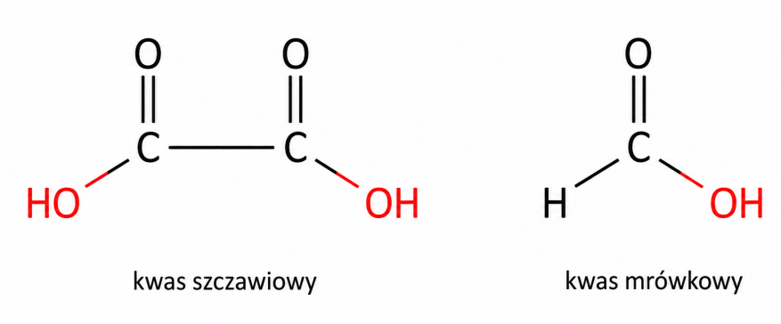
Kwas szczawiowy jest kwasem słabym dwuprotonowym, a mrówkowy słabym jednoprotonowym.
Kwas szczawiowy występuje w roślinach, tworzy nierozpuszczalne sole z II grupą (dlatego nie należy jeść za dużo szczawiu – wytrąca nierozpuszczalne szczawiany, które są powodem kamieni nerkowych). Szczawiany są związkami nietrwałymi, najpierw rozkłądają się do węglanów, a następnie do tlenków:
\[CaC_{2}O_{4} \rightarrow CaCO_{3} + CO\]
\[CaCO_{3} \rightarrow CaO + CO_{2}\]
Kwas mrówkowy występuje powszechnie w jadzie mrówek, klasyfikowany jest jako kwas słaby, ale jest mocniejszy od większości kwasów tak klasyfikowanych, rozkłada się po wpływem silnych kwasów:
\[\ HCOOH \rightarrow CO + H_{2}O\]
O związkach węgla z wodorem mówi chemia organiczna. Węgiel chętnie tworzy wiązania podwójne i potrójne z sobą co dodatkowo zwiększa bogactwo jego związków.
Węgliki – to związki metali z węglem. Węgliki możemy podzielić na jonowe oraz kowalencyjne. Węgliki jonowe zawierają kation metalu i anion oparty na węglu, niekoniecznie \(C^{4 -}\), przykładami są węglik wapnia \(CaC_{2}\) zwany karbidem, węglik glinu \(Al_{4}C_{3}\) oraz węglik magnezu \(Mg_{2}C_{3}\). Najbardziej klasyczną metodą syntezy węglików jest reakcja węgla z tlenkiem metalu w podwyższonej temperaturze, z utworzeniem węgliku metalu i tlenku węgla (II):
\[CaO + 3C \rightarrow CaC_{2} + CO\]
\[2Al_{2}O_{3} + 9C \rightarrow Al_{4}C_{3} + 6CO\]
\[2MgO + 5C \rightarrow Mg_{2}C_{3} + 2CO\]
Węgliki te mają różną budowę anionu w zależności od metalu
Węglik wapnia zawiera kation \(Ca^{2 +}\) i anion \(C_{2}^{2 -}\). Anion ten jest w zasadzie acetylenem pozbawionym wodorów.Węglik glinu zawiera anion \(C^{4 -}\), natomiast węglik magnezu zawiera anion \(C_{3}^{4 -}\) o strukturze:
Węgliki te są silnymi zasadami i w wyniku reakcji z nadmiarem wody dają odpowiednie wodorotlenki metali oraz węglowodory, które wywodzą się z anionów występujących w tych węglikach:
\[CaC_{2} + 2H_{2}O \rightarrow Ca(OH)_{2} + C_{2}H_{2}\]
\[Al_{4}C_{3} + 6H_{2}O \rightarrow 4Al(OH)_{3} + 3CH_{4}\]
\[Mg_{2}C_{3} + 4H_{2}O \rightarrow 2Mg(OH)_{2} + C_{3}H_{4}\]
Istnieją również węgliki kowalencyjne takie jak węglik tytanu oraz węglik krzemu, są to zwykle związki o strukturze diamentu oraz węgliki metaliczne, będące roztworami węgla w metalu. Przykładem jest żeliwo – roztwór grafitu w żelazie.
Krzem
Krzem jest półmetalem niewystępującym w przyrodzie w stanie czystym, jednak mającym kolosalne znaczenie dla elektroniki - używa się go w półprzewodnikach. Czysty krzem ma strukturę kryształu typu diamentu.
Krzem przemysłowo otrzymujemy na drodze redukcji tlenki krzemu węglem w piecach elektrycznych:
\[SiO_{2} + 2C \rightarrow Si + 2CO\]
W wyniki tego procesu otrzymujemy krzem amorficzny, czyli o nieustalonej strukturze. Monokryształy wymagają dodatkowej obróbki metodą Czochralskiego. W skali laboratoryjne krzem można uzyskać za pomocą redukcji magnezem:
\[SiO_{2} + 2Mg \rightarrow Si + 2MgO\]
Istnieje również odmiana alotropowa analogiczna do diamentu, zwana silicenem.
Krzem tworzy związki wodorem o strukturze analogicznej do alkanów \(Si_{n}\ H_{2n + 2}\)., jednak nie tworzy związków z wodorem i wiązaniami podwójnymi i potrójnymi między \(Si\). W przeciwieństwie do alkanów silany – związki wodoru z krzemem nie są stabilne w wodzie z uwagi na wodór na ujemnym stopniu utlenienia, a w wodzie jest dodatni to się synproporcjonuje
\[SiH_{4} + H_{2}O \rightarrow H_{4}SiO_{4} + 4H_{2}\]
\[SiH_{4} + 4HCl \rightarrow SiCl_{4} + 4H_{2}\]
Z tlenem krzem tworzy dwa tlenki- tlenek krzemu (II) \(SiO\ \) i tlenek krzemu (IV) \(SiO_{2}\). Bardziej rozpowszechnionym jest \(SiO_{2}\)- jest to piasek. Oba te związki w przeciwieństwie do odpowiednich tlenków węgla mają strukturę kryształu kowalencyjnego (twarde, wysoka temperatura wrzenia, topnienia, brak rozpuszczalności)
Struktura krystaliczna \(SiO_{2}\) przypomina strukturę diamentu, na miejscu węgla znajduje się krzem, o na miejscu wiązań między węglami znajdują się mostki tlenowe -O- .Związek ten jest klasyfikowany jako tlenek kwasowy, ale ma pewną szczególną reaktywność = nie reaguje z wodą oraz reaguje z kwasem fluorowodorowym – oczywiście są to nietypowe reakcje. Normalne reakcje z zasadą zachodzą z utworzeniem anionów kwasów krzemowych.
\[SiO_{2} + H_{2}SO_{4} \rightarrow brak\ reakcji\]
\[SiO_{2} + H_{2}O \rightarrow brak\ reakcji\ (PIASEK\ Z\ WODĄ\ NIE\ REAGUJE)\]
\[SiO_{2} + 2NaOH \rightarrow Na_{2}SiO_{3} + H_{2}O\]
Lub w nadmiarze
\[SiO_{2} + 4NaOH \rightarrow Na_{4}SiO_{4} + 2H_{2}O\]
Reakcje te mają postać w zapisie jonowym:
\[SiO_{2} + 2OH^{-} \rightarrow SiO_{3}^{2 -} + H_{2}O\]
\[SiO_{2} + 4OH^{-} \rightarrow SiO_{4}^{4 -} + H_{2}O\]
PIASEK REAGUJE RÓWNIEŻ Z \(HF\) I JEST TO KOLEJNE NIETYPOWE
\[SiO_{2} + 4HF \rightarrow SiF_{4} + 2H_{2}O\]
Reakcja ta używana jest do trawienia szkła, w ten sposób np. powstają napisy na szkle
Roztwory \(Na_{2}SiO_{3}\) lub \(Na_{4}SiO_{4}\) nazywane są szkłem wodnym
\(SiO_{2}\) jest głównym składnikiem szkłą (reszta to domieszki innych tlenków). Struktura szkła to przechłodzona „zamrożona” - bezpostaciowa struktura cieczy. \(SiO\) jest i ma strukturę amorficzną, jest tlenkiem obojętnym czyli nie reaguje ani z kwasami ani z zasadami ani z wodą.
„Maturalne” kwasy krzemowe są dwa i są to
\[H_{2}SiO_{3}\]
\[H_{4}SiO_{4}\]
Są one słabymi kwasami wieloprotonowymi. Sole I grupy tych kwasów są dobrze rozpuszczalne zwane są szkłami wodnymi, sole metali kolejnych grup są źle rozpuszczalne. KWAS KRZEMOWY JEST KWASEM ŹLE ROZPUSZCZALNYM I TO JEST JEDYNY KWAS NA MATURZE O KTÓRYCH MUSISZ WIEDZIEĆ ZE SĄ ŹLE ROZPUSZCZALNE; czyli zakwaszanie soli kwasu krzemowego powoduje wytrącenie osadu powoduje wyparcie tego kwasu i jednocześnie jego wytrącenie.
\[Na_{2}SiO_{3} + 2HCl \rightarrow H_{2}SiO_{3} + 2NaCl\]
\[SiO_{3}^{2 -} + 2H^{+} \rightarrow H_{2}SiO_{3} \downarrow\]
I analogicznie
\[Na_{4}SiO_{4} + 4HCl \rightarrow H_{4}SiO_{4} + 4NaCl\]
\[SiO_{4}^{4 -} + 4H^{+} \rightarrow H_{4}SiO_{4}\]
Kwas krzemowy powoli ulega rozkładowi do \(SiO_{2}\), ale nie jest to reakcja tak szybka jak dla \(CO_{2}\).
\[H_{2}SiO_{3} \rightarrow H_{2}O + SiO_{2}\]
Mogą istnieć częściowo odwodnione kwasy krzemowe, w których występują mostki tlenowe miedzy atomami krzemu:
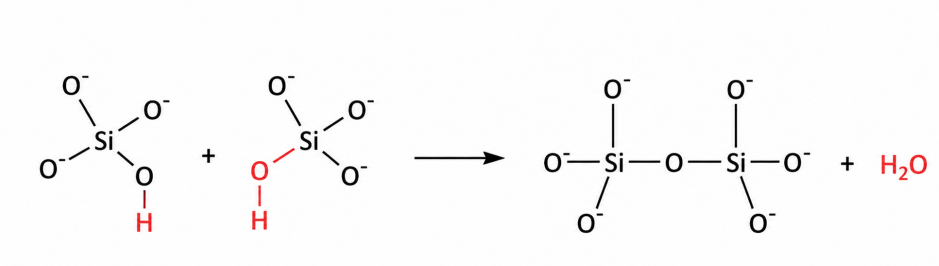
W zapisie cząsteczkowym reakcja ta ma postać:
\[2Na_{3}HSiO_{4} \rightarrow Na_{6}Si_{2}O_{7} + H_{2}O\]
Krzemiany bardzo często występują składniki minerałów.